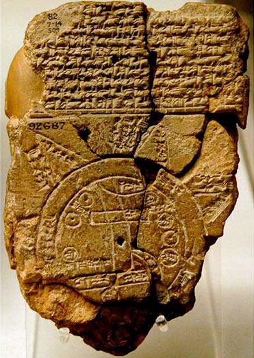

تاریخچهی شب یلدا
تاریخچهی شب یلدا به گذشتههای بسیار دور برمیگردد. اما قدمت دقیقش مشخص نیست. برخی باستانشناسان، تاریخ شب یلدا را هفت هزار ساله میدانند. آنها به ظروف سفالی دوره پیش از تاریخ، استناد میکنند. این ظروف دارای نقوش حیوانیِ ماههای ایرانی، مانند قوچ و عقرب هستند. البته این نقوشِ در کتیبهها و یافتههای باستانشناسی کمیاباند. اما باستانشناسان معتقدند، میشود آیین مربوط به شب یلدا را تا هفت هزار سال قبل، ردیابی کرد.
با همهی اینها آنچه بهعنوان شب یلدا رسمیت یافته، به حدود ۵۰۰ سال، قبل از میلاد برمیگردد. یلدا در زمان داریوش یکم به تقویم رسمی ایرانیان باستان، وارد شده است. تقویمی که برگرفته از گاهشماری بابلیها و مصریها ست.